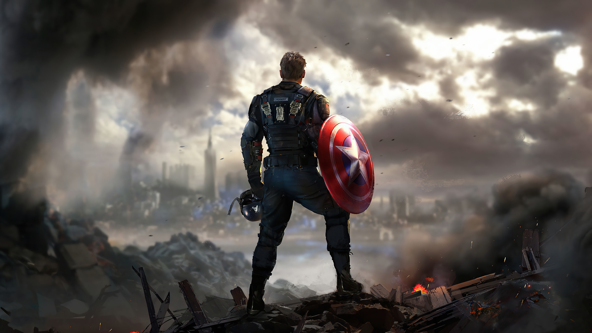
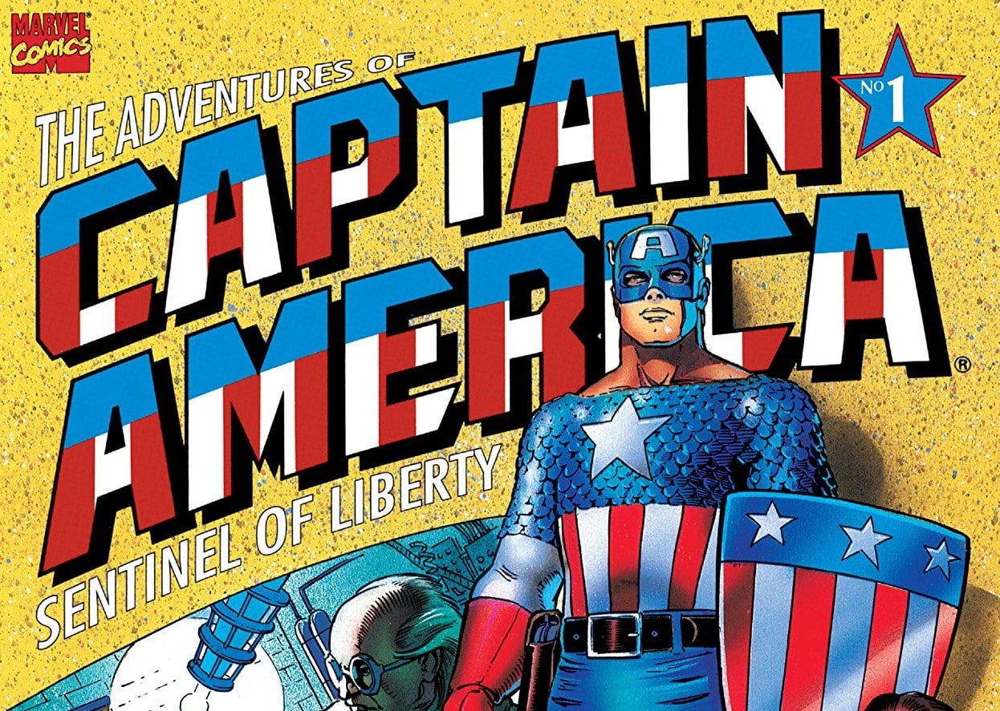
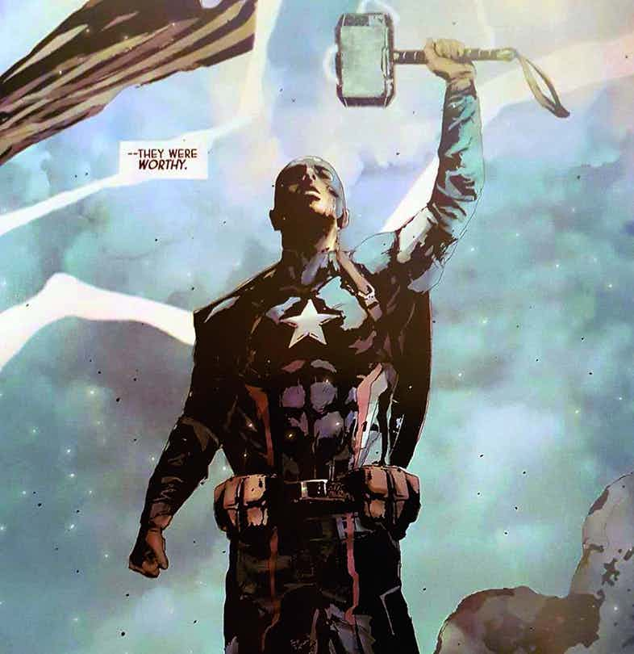

CAPTAIN AMERICA
 March 14, 2024Capitão América: Tudo sobre a história do personagem da Marvel 🦸♂️
O Capitão América é a identidade heroica de Steve Rogers. Além disso, é considerado como o primeiro Vingador. Em suma, o personagem nasceu em 1941, na revista Captain America Comics #1. Ademais, o super herói foi criado por Joe Simon e Jack Kirby, dos estúdios da Marvel Comics.
O Capitão fez parte de um movimento patriota que trazia super-heróis, principalmente, atuando na Segunda Guerra Mundial. Dessa forma, Steve atuava ao lado de Bucky Barnes, seu melhor amigo, no combate contra nazistas. No entanto, consequentemente, fez com que sua popularidade ficasse reduzida ao fim da guerra.
Enfim, antes de se tornar herói, entretanto, Steve era um jovem franzino. Cujo sonho era servir os Estados Unidos na luta contra os nazistas. Mas, ele só conseguiu suas habilidades graças aos efeitos do soro de Supersoldado. Onde ganhou músculos e alta estatura, quase que imediatamente.
Contudo, os planos de criar um exército de Supersoldados do Dr. Dr. Erskine, que foi quem criou o soro. Acaba que não se concretiza, já que um atentado, acaba com tudo. Com isso, Steve é o único exemplar do Projeto Renascimento.
Então, graças à sua coragem e inteligência, o Capitão América tornou-se um grande herói, realizando arriscadas missões. Inclusive, em uma delas, o herói acaba congelado, sendo encontrado anos depois pelos Vingadores. Por fim, Steve se torna um dos membros principais e até líder da principal equipe de heróis do Universo Marvel. E assim, o super herói da Marvel começa sua jornada.
Origem do Capitão América 🧭
Apesar de ser um dos personagens mais importantes da Marvel, o Capitão América surgiu quando a editora ainda se chamava Timely Comics. A princípio, ele se chamaria Super América. Mas, o nome foi mudado antes da publicação.
Além disso, sua principal marca, o escudo redondo, também foi alterada. Pois, antes desse escudo, ele utilizada um de formato triangular, muito parecido com o utilizado por um outro herói dos quadrinhos. Portanto, com medo de problemas com plágio, o formato foi alterado. O que acabou se tornando uma marca registrada do super herói da Marvel.
Em suma, Steve Rogers nasceu em 4 de julho de 1920, sendo filho de imigrantes irlandeses. Ademais, o garoto tinha muitos problemas de saúde. Entretanto, tinha muita vontade de entrar no exército para lutar na Segunda Guerra Mundial. Então, disposto a fazer qualquer coisa para isso, sobretudo, ele aceita participar de um experimento de Supersoldados. Onde acaba ganhando os poderes de Capitão América.
Logo após o fim da guerra, o interesse do público por super-heróis caiu muito. Dessa forma, em uma tentativa de renovação, editores substituíram o personagem de Bucky pela Golden Girl, Betty Ross. Além disso, o Capitão passou a lutar contra comunistas, durante a Guerra Fria. No entanto, mesmo assim não conteve o fracasso.
Poderes e habilidades do Capitão América ⚡
Graças ao experimento do soro do Supersoldado, Steve obteve um poder de cura. Além disso, ganhou um corpo mais elevado e desenvolvido do que qualquer outro lutador ou atleta do planeta. Ou seja, se o limite físico de um homem comum no ápice de sua forma física fosse 10, o do Capitão América, seria de 30.
Por fim, o soro ainda proporcionou ao Capitão América outros atributos físicos. Tais como: resistência, agilidade e velocidade sobre-humanas. Pois, seu esqueleto é muito mais denso do que um de um humano normal.
Por fim, Steve Rogers também é um líder nato. Por isso, liderou vários grupos de heróis durante toda a sua carreira de super herói. Além disso, por ser um ex-militar, ele é um ótimo estrategista e perito em várias táticas de guerrilha e armas de fogo. Enfim, Rogers além de ter treinado todas as artes marciais, é mestre em combate corpo-a-corpo. E muito inteligente.